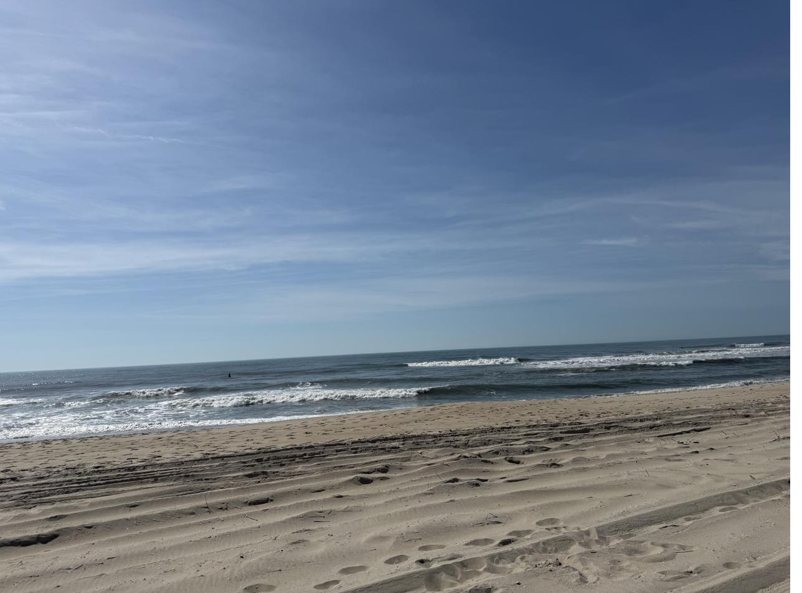
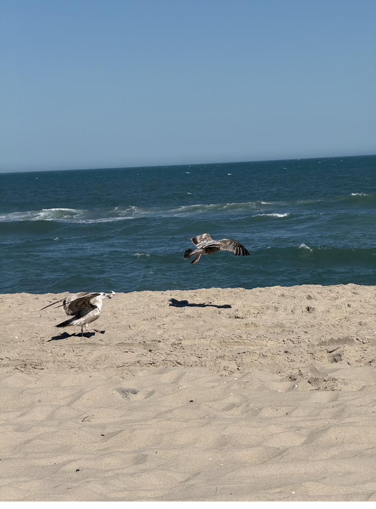

A Day at the Edge of the Water
"Be still, and know that I am God."
— Psalm 46:10
It was cold for the season. The wind came in steady from the water, and there was a kind of brightness to it — the sun on the sand, the sound of the surf, all of it sharper than it would have been in summer.
We had come to be away. That was the whole point. No list. No schedule. The car in the lot and the long walk down to where the dune grass ends and the beach opens up.

A gull flew low across the waves. Then another, picking its way along the tideline. There was no one to watch them but us.
I have noticed that the ocean does something to the size of a thing. A worry that felt large in the kitchen looks different from a quarter mile of empty sand. Not gone — never gone — but smaller. Held by something bigger.
We did not stay long. The wind was honest about itself. But we stayed long enough.
Some days, peace is not something you find. It is something a place gives you, if you go where it lives.
Until next week,
Jessica